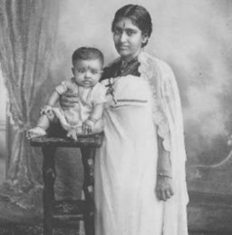
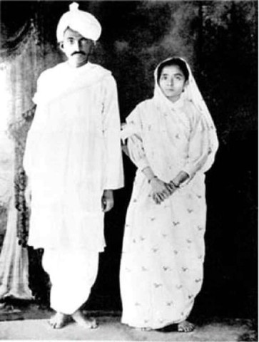
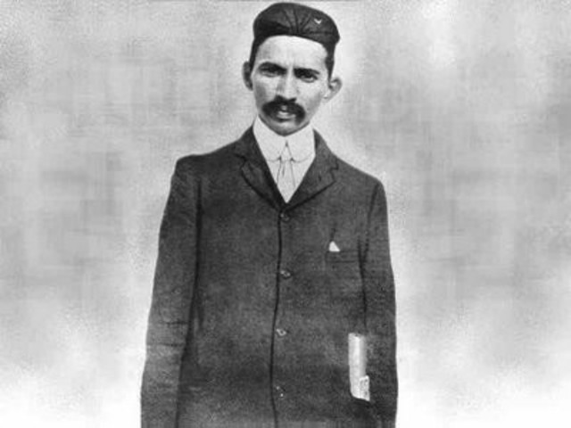
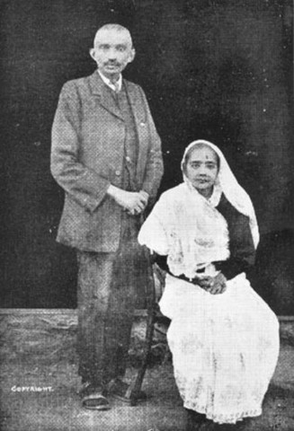
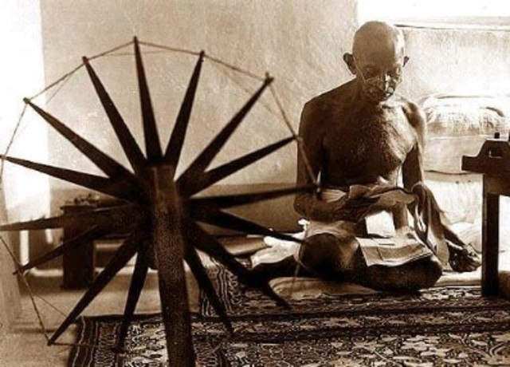
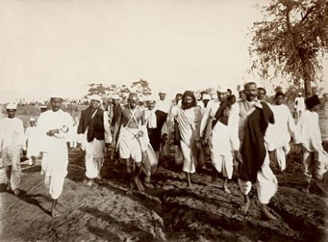

1869 Indian nationalist leader Gandhi (born Mohandas Karamchand Gandhi) was born in Porbandar, Kathiawar, India, which was then part of the British Empire.
MOHANDAS KARAMCHAND GANDHI
Father of the Nation

Mahatma Gandhi at the time of Independence.
Timeline
|

Oct 2, 1869 - Birth |

Jan 1, 1883 - Marriage |

Sept 4, 1888 - Law School |

Dec 1, 1896 - SouthAfrica |
|

Jan 1st, 1906 - First Protest |

March 12, 1930 - Saltstrike |

Aug 15, 1947 - Independence |

Jan 30, 1948 - Passed Away |
Freedom Struggle
1888 In 1888, 18-year-old Gandhi sailed for London, England, to study law.
1893 In April 1893, he sailed for Durban in the South African state of Natal.
1993 A seminal moment occurred on June 7, 1893, during a train trip to Pretoria, South Africa, when a white man objected to Gandhi’s presence in the first-class railway compartment, although he had a ticket.
1994 Gandhi formed the Natal Indian Congress in 1894 to fight discrimination.
1906 In 1906, Gandhi organized his first mass civil-disobedience campaign, which he called “Satyagraha” (“truth and firmness”).
1913 The South African government accepted recognition of Hindu marriages and the abolition of a poll tax for Indians.
1915 In 1915 Gandhi founded an ashram in Ahmedabad, India, that was open to all castes. Wearing a simple loincloth and shawl, Gandhi lived an austere life devoted to prayer.
1919 In 1919, Gandhi called for a Satyagraha campaign of peaceful protests and strikes against Rowlatt Act.
1922 British authorities arrested Gandhi in 1922, he pleaded guilty to three counts of sedition.
1930 Gandhi planned a new Satyagraha campaign, The Salt March, that entailed a 390-kilometer/240-mile march to the Arabian Sea.
1932 He embarked on a six-day fast to protest the British decision to segregate the “untouchables,” those on the lowest rung of India’s caste system.
1942 As Great Britain found itself engulfed in World War II in 1942, Gandhi launched the “Quit India” movement.
1948 On January 30, 1948, 78-year-old Gandhi was shot and killed by Hindu extremist Nathuram Godse, who was upset at Gandhi’s tolerance of Muslims.
Quotes
A man is but a product of his thoughts. What he thinks he becomes.
I will not let anyone walk through my mind with their dirty feet.
Happiness is when what you think, what you say, and what you do are in harmony.
Live as if you were to die tomorrow. Learn as if you were to live forever.
The best way to find yourself is to lose yourself in the service of others.
If I have the belief that I can do it, I shall surely acquire the capacity to do it even if I may not have it at the beginning.
The weak can never forgive. Forgiveness is an attribute of the strong.
Strength does not come from physical capacity. It comes from an indomitable will.
The enemy is fear. We think it is hate; but, it is fear.
Seek not greater wealth, but simpler pleasure; not higher fortune, but deeper felicity.
Our greatest ability as humans is not to change the world; but to change ourselves.
You must not lose faith in humanity. Humanity is an ocean; if a few drops of the ocean are dirty, the ocean does not become dirty.
There is a sufficiency in the world for man’s need but not for man’s greed.
A ‘No’ uttered from deepest conviction is better and greater than a ‘Yes’ merely uttered to please, or what is worse, to avoid trouble.
Gentleness, self-sacrifice and generosity are the exclusive possession of no one race or religion.
There is nothing that wastes the body like worry, and one who has any faith in God should be ashamed to worry about anything whatsoever.
Passing Away
Mahatma Gandhi was assassinated on 30 January 1948 at age 78 in the compound of Birla House (now Gandhi Smriti), a large mansion in central New Delhi. His assassin was Nathuram Vinayak Godse, a Chitpavan Brahmin from Pune, Maharashtra, a Hindu nationalist, a member of the political party, the Hindu Mahasabha, as well as a former member of the Rashtriya Swayamsevak Sangh (RSS), a right-wing Hindu paramilitary volunteer organization. Godse considered Gandhi to have been too accommodating to Muslims during the Partition of India of the previous year.
Recognition
Mahatma Gandhi had a huge impact on history and our ethers as a nation. His influence is so great that till date we see his face every day on our currency And, with every region having their own famous freedom fighter and every religion having a sacred name, it would be difficult to satisfy each and everyone and keep them united, hence, Mahatma Gandhi being the ‘Father of the nation’ was decided to be featured on the currency note.

Links
Mahatma Gandhi had a huge impact on history and our ethers as a nation. His influence is so great that till date we see his face every day on our currency And, with every region having their own famous freedom fighter and every religion having a sacred name, it would be difficult to satisfy each and everyone and keep them united, hence, Mahatma Gandhi being the ‘Father of the nation’ was decided to be featured on the currency note.